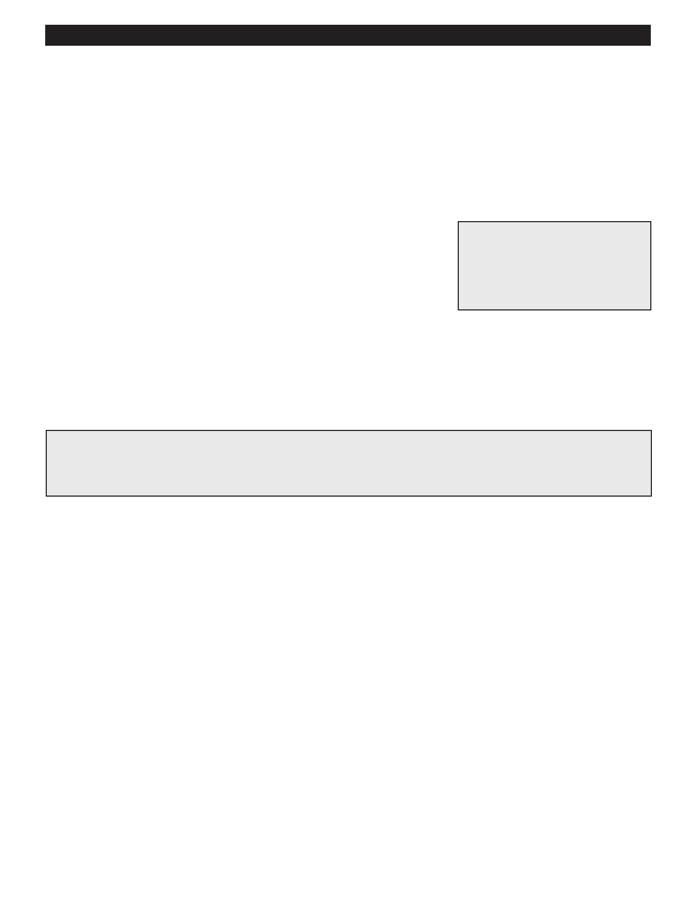

PA RT I C I PA N T R E S O U R C E G U I D E
Replace an Air Filter
Sometimes, little things cause big problems. A dirty air filter can reduce airflow through
the system, meaning less heat for the apartment.
What’s more, dirty air filters increase the furnace temperature, which can lead to fan limit
switch problems.
Safety
Tools and Materials Needed
Wear eye and mouth protection.
Replacement filter (disposable,
reusable, or electronic)
Screwdriver (to open the access
panel, if needed)
How-to Steps
1. Find the filter on the furnace.
2. Carefully remove the old filter. Clean or replace it as needed. Some filters can be washed while others require replacement.
An Ounce of Prevention…
To keep both electric and gas furnaces operating at peak efficiency, check air filters regularly, at least every
other month.
Notes:
14